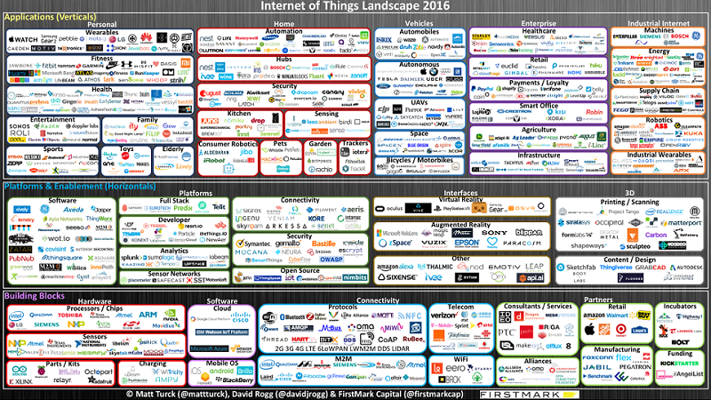
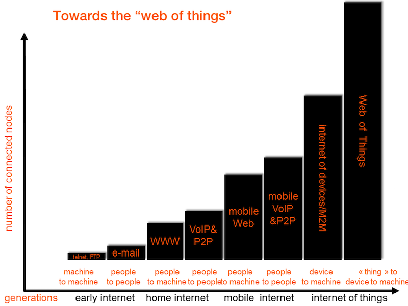

从互联网到物联网
[TOC]
2016年物联网版图

{kind=link}
演变

Web 1.0 时代
- WWW 由三部分组成：URL、HTTP、HTML。
- 好处：免费、无状态、自带格式
- HTTP 1.1 超文本传输协议
Web 2.0 时代
广泛运用于 API 设计的 REST
移动互联网时代
本地处理，云端 Sync 的面向资源的原生技术架构。通常采用类 ActiveSync 架构，利用 Http 取增量数据
HTML 5时代
- 从标记语言到 Web Application
- 本地处理，云端 Sync 的面向资源的 HTML 5 技术架构
物联网（IoT）时代
定义：
国际组织定义中的“物联网”、“传感网”，特指小型低功耗设备组成的网络。
特征：
- 比移动互联网更加艰巨的是网络可靠性更差、设备性能更低
- 省电和休眠是常态
- IETF 物联网的 CoAP（受限网络协议）借鉴于 REST
物联网（WoT）时代
IoT 意味着所有设备能够相互连结，进而形成物联网。而设备沟通能够通过各种方式如Bluetooth, ZigBee 和 WIFI等等。IoT的最后阶段WoT则是将这些沟通方式最后都通过统一 Web 标准的方式来达成。这也是以往所有新技术最终能得到蓬勃发展的重要因素之一:统一的标准和规范。——摘自《IoT第四階段 : Web of Things (WoT)》
互联网与物联网区别
| 简介 | 意义 | 关键技术 | |
|---|---|---|---|
| 互联网 | 解决信息共享、交互。连接了人和信息内容，提供标准化服务。 | 把卖产品变为卖内容和服务 | 大数据、云计算、商业智能 |
| 物联网 | 通过通信技术（射频识别 RFID），把传感器（红外感应、全球定位、激光扫描）、控制器、机器、人员和物联在一起。 | 传感器技术、RFID标签、嵌入式系统技术 |
物联网技术
硬件层
嵌入式处理技术。
传感器：温感、湿度感应器、燃气感应器、污染感应器、电流传感器、电压感应器、临近检测、超声波感应器、光感、磁传感器、指纹感测器、被动式红外传感器、医疗监测设备、无线射频识别等
执行器：显示、声音、开关
应用程序层
终端技术：终端、浏览器/客户端、移动设备
服务层
- 网络技术：应用程序、MQTT、HTTP、CoAP
- 无线技术：NB-IoT(基于蜂窝的窄带物联网)、Bluetooth 5.0
协调层（可选）
协调设备
参考
- 野狗的 “面向资源架构设计”
- phodal/lan：一个开源的物联网平台
- html5 时代
- RESTful 的 CoAP 协议
- coap-app：CoAP 小实例
- CoAP-cli：一个基于NodeJS的CoAP命令行工具，其核心是基于Node-CoAP库
- CoAP CLI 命令行工具
- node-coap：Nodejs的扩展Node-CoAP
- TinyOS CoAP
- WoT 与 IoT
- Web of Things (WoT)
- The Internet of Things : beyond the hype